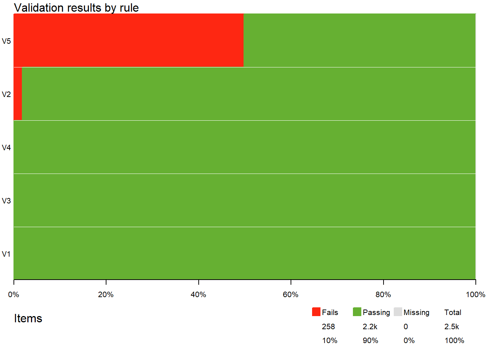
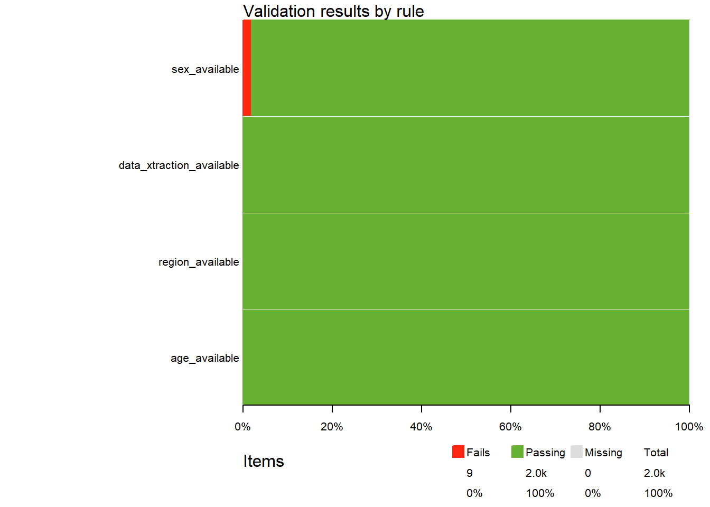

3 Data validation
The goal of data validation is to ensure that the available data meet certain quality requirements. This is an important step to undertake before proceeding to data analysis. Data problems are commonplace and may be diverse in nature. Examples are non-unique identifiers (patient or visit number), duplicated records, missing or impossible values (like date = “2022-02-30”), or inconsistent values (like age = 87, and menopausal status = “pre-menopausal”). Because these kind of problems are so common in real study datasets, we need to undertake actions to detect and hopoefully fix them.
More formally, data validation is defined as an activity aimed at verifying whether or not the values of a variable, or the combination of values of several variables, belong to a pre-specified acceptable set.
A data validation plan is a list of all the specific verifications we want to carry out for a clinical study. Each of these verifications is called a validation rule. Table 3.1 shows some examples of validation rules for a hypothetical data set containing variables age, sex and menopausal status, as well as a patient identifier :
| Id | Example of validation rules |
|---|---|
| 1 | patient identifier is numeric |
| 2 | patient identifier is not missing |
| 3 | patient identifier is unique |
| 4 | age is not missing |
| 5 | age value is between 18 and 99 |
| 6 | sex is not missing |
| 7 | sex is either “male” or “female” |
| 8 | if sex is “male”, menopausal status is missing |
| 9 | if sex is “female”, menopausal status is either “pre-menopausal” or “pos-menopausal” |
Validation rules can refer to several data characteristics. In table 3.1, rule 1 refers to the type of variable, expected to be numeric; rule 2, 4 and 6 refer to data availability; rule 5 refers to the expected range of values of a quantitative variable; and rules 8 and 9 refer to the expected value of a variable conditional on another variable. These are not the ony types of rules we may possibly define (as you will see in this chapter), but just examples of the most common ones.
In table 3.1, rules are stated in plain English. However, for these to be executable on the relevant data, they need to be coded. The R package validate allows to declare data validation rules (such as those in table 3.1), to confront data with them, and to analyze or visualize the results. So, let’s load this package, as well as tidyverse:
library(tidyverse)
library(validate)
In the following sections we show how to implement and execute different types of rules using the validate package.
3.1 Variable types
It is worth checking that variables in a dataframe are of the expected type. Suppose we read the DISETAHE data for the first time, and select demographic variables (as defined in section 1.6):
library(readxl)
demo <- read_excel("./data/hta.xlsx", sheet = "data") %>%
select(pid:ah_dx_dt)
In the resuting dataframe demo, we expect age, sex, and region to be numeric, anddata_xtract_dt and ah_dx_dt to be of class Date. The following script verifies if this is the case. First, we define rules with validator() and save them into an object name of our choice (my_rules): any expression that resolves to a logical value (TRUE or FALSE) can be used as a rule, and different rules are separated by commas; here we use is.numeric() (from base R) and is.Date() from package lubridate, so that we need to load this package previously. Second, we use confront() to execute the rules on dataframe demo, we save the result as res, and print res to the console:
library(lubridate) # to use is.Date()
my_rules <- validator(is.numeric(age),
is.numeric(sex),
is.numeric(region),
is.Date(data_xtract_dt),
is.Date(ah_dx_dt)
)
res <- confront(demo, my_rules)
resObject of class 'validation'
Call:
confront(dat = demo, x = my_rules)
Rules confronted: 5
With fails : 2
With missings: 0
Threw warning: 0
Threw error : 0
The result informs that two of the five rules confronted to demo have failed (With fails). To get more detailed information, we use summary() on the result provided by confront() (res):
summary(res) name items passes fails nNA error warning expression
1 V1 1 1 0 0 FALSE FALSE is.numeric(age)
2 V2 1 1 0 0 FALSE FALSE is.numeric(sex)
3 V3 1 1 0 0 FALSE FALSE is.numeric(region)
4 V4 1 0 1 0 FALSE FALSE is.Date(data_xtract_dt)
5 V5 1 0 1 0 FALSE FALSE is.Date(ah_dx_dt)
In the output, rules are identified by names, which by default are V1 to V5, but we could have given custom names when defining the rules in validator(), by preceding each rule with the desired name and an equal sign. For each rule, we are presented with the number of items checked, the number of passes and fails, possible errors or warnings raised when executing the rule and the rule expression. In this case, because all the rules refer to the type of a dataframe variable, only one result is produced per rule, either a pass or a fail, and neither errors nor warnings have been raised. The last two rules have failed, indicating that variables data_xtract_dt and ah_dx_dt are not of the expected class Date. Indeed they are POSIXct objects:
class(demo$data_xtract_dt)[1] "POSIXct" "POSIXt" class(demo$ah_dx_dt)[1] "POSIXct" "POSIXt" Let’s fix these by converting to dates and check again. Note the use of the pipe to to confront the rules to demo, and to summarize the result:
demo <- demo %>%
mutate(across(c(data_xtract_dt, ah_dx_dt), as.Date))
demo %>% confront(my_rules) %>% summary() name items passes fails nNA error warning expression
1 V1 1 1 0 0 FALSE FALSE is.numeric(age)
2 V2 1 1 0 0 FALSE FALSE is.numeric(sex)
3 V3 1 1 0 0 FALSE FALSE is.numeric(region)
4 V4 1 1 0 0 FALSE FALSE is.Date(data_xtract_dt)
5 V5 1 1 0 0 FALSE FALSE is.Date(ah_dx_dt)
Problem fixed!
3.2 Missings
Rules to verify data availability can be defined using !is.na(). Function is.na(x) produces a TRUE when x is missing or a FALSE otherwise. The negation operation ! can be used to reverse the result, so that !is.na(X) checks that x is not missing, resulting in a TRUE when x is available (not missing) and a FALSE when missing.
The following checks for availability of demo variables:
my_rules <- validator(!is.na(age),
!is.na(sex),
!is.na(region),
!is.na(data_xtract_dt),
!is.na(ah_dx_dt)
)
demo %>% confront(my_rules) %>% summary() name items passes fails nNA error warning expression
1 V1 500 500 0 0 FALSE FALSE !is.na(age)
2 V2 500 491 9 0 FALSE FALSE !is.na(sex)
3 V3 500 500 0 0 FALSE FALSE !is.na(region)
4 V4 500 500 0 0 FALSE FALSE !is.na(data_xtract_dt)
5 V5 500 251 249 0 FALSE FALSE !is.na(ah_dx_dt)
In this case, because each rule refers to the values of a variable, they producs as many results as rows in the confronted dataframe (items in the output), 500 in this case. Variables age, region, and data_xtract_dt have no missings since all 500 items passed the rule and none failed. However, nine missings (fails) are observed in sex, and two hundred forty-nine in ah_dx_dt.
A visualization of the frequency of fails per rule can be produced using plot() with the result of confront():
demo %>% confront(my_rules) %>% plot()
Taking into account that this study was conducted by reviewing medical records, we may think that the date of diagnosis of AHT was not available in the medical records, so that we will have little chances to recover this information. In such a case, we may decide to drop this rule. Let’s then redefine our rules, and take the chance to give them custom names for easier identification of the outputs elements:
rules <- validator(age_available = !is.na(age),
sex_available = !is.na(sex),
region_available = !is.na(region),
data_xtraction_available = !is.na(data_xtract_dt)
)
demo %>% confront(rules) %>% summary() name items passes fails nNA error warning expression
1 age_available 500 500 0 0 FALSE FALSE !is.na(age)
2 sex_available 500 491 9 0 FALSE FALSE !is.na(sex)
3 region_available 500 500 0 0 FALSE FALSE !is.na(region)
4 data_xtraction_available 500 500 0 0 FALSE FALSE !is.na(data_xtract_dt)demo %>% confront(rules) %>% plot()
To identify cases that produced a fail for some rule, function violating() should be used . Note that the result is a dataframe containing all cases that produced a fail in some of the rules:
demo %>% violating(rules)# A tibble: 9 × 6
pid data_xtract_dt region age sex ah_dx_dt
<dbl> <date> <dbl> <dbl> <dbl> <date>
1 397 2004-04-30 5 42 NA NA
2 2651 2004-07-06 9 52 NA NA
3 3779 2004-10-06 13 46 NA NA
4 4221 2004-10-27 17 77 NA NA
5 4650 2004-11-24 2 70 NA 1995-01-01
6 5087 2004-12-21 17 71 NA 1994-01-01
7 6195 2005-03-09 8 44 NA NA
8 6232 2005-03-09 14 38 NA NA
9 7154 2005-05-05 1 65 NA NA
Sometimes we may want to check for the completeness of a set of important variables, that is, to verify if these variables are all available. This is the job of function is_complete(). Here, we check for rows in demo having complete data on sex, age and region:
my_rules <- validator(is_complete(pid, age, sex, region))
confront(demo, my_rules) %>% summary() name items passes fails nNA error warning expression
1 V1 500 491 9 0 FALSE FALSE is_complete(pid, age, sex, region)
The result is quite obvious in this case, since we already know that there are no missings in age or region, and there are nine missings in sex. But let’s get the rows failing:
violating(demo, my_rules) # A tibble: 9 × 6
pid data_xtract_dt region age sex ah_dx_dt
<dbl> <date> <dbl> <dbl> <dbl> <date>
1 397 2004-04-30 5 42 NA NA
2 2651 2004-07-06 9 52 NA NA
3 3779 2004-10-06 13 46 NA NA
4 4221 2004-10-27 17 77 NA NA
5 4650 2004-11-24 2 70 NA 1995-01-01
6 5087 2004-12-21 17 71 NA 1994-01-01
7 6195 2005-03-09 8 44 NA NA
8 6232 2005-03-09 14 38 NA NA
9 7154 2005-05-05 1 65 NA NA
Indeed, the nine fails are the same cases reported previously as having sex missing.
3.3 Ranges
Checking a range of values is possibly the most common rule imposed on quantitative variables. Range checks are also useful to check if dates are in an expected time window (such as enrollment dates in a study).
Range checks can be easily implemented with function in_range(), using its arguments min and max to define the expected range. Here we set minimum and maximum values for age as 18 and 95 respectively. The minimum comes from the selection criteria of the study protocol, but the maximum age is set at 95 for illustration purposes only, since no upper bound for age was set in this study and ages above 95 are perfectly possible. The range defined for the data extraction date (data_xtract_dt) corresponds to the study start and finalization dates. Note the use of the pipes to confront the rules to dataframe demo, and to summarize the result:
my_rules <- validator(in_range(age, min = 18, max = 95),
in_range(data_xtract_dt, "2004-01-01", "2005-05-31"))
demo %>% confront(my_rules) %>% summary() name items passes fails nNA error warning expression
1 V1 500 499 1 0 FALSE FALSE in_range(age, min = 18, max = 95)
2 V2 500 493 7 0 FALSE FALSE in_range(data_xtract_dt, "2004-01-01", "2005-05-31")
The summary shows that one case has an age value out of the expected range, and seven cases fail for the data extraction date. Let’s see what are the cases failing for these two rules:
demo %>% violating(my_rules)# A tibble: 8 × 6
pid data_xtract_dt region age sex ah_dx_dt
<dbl> <date> <dbl> <dbl> <dbl> <date>
1 11 2003-03-15 6 52 1 1998-01-01
2 15 2003-03-15 6 57 2 1997-01-01
3 20 2003-05-13 1 62 1 2003-04-10
4 24 2003-05-27 10 69 2 1993-01-01
5 33 2003-05-28 10 70 2 1994-01-01
6 37 2003-06-14 9 64 2 1995-04-07
7 50 2003-06-16 2 55 2 NA
8 562 2004-05-05 3 99 2 1995-01-01
Patient 562 has an age value of 99 years. The remaining patients have a data extraction date previous to the study start in 2004-01-01, and these are possibly data entry errors.
Note that, even though sex and region are numeric, we did not check a range for them. The reason is that these can take natural numbers only, like 1 or 2 for sex. A range check would detect unacceptable values like 3, but what about 1.3? A better approach is shown in the next section.
3.4 Codelists
A codelist is a list of possible values for a categorical variable. For instance, codes for sex are 1 or 2, and for region are 1, 2, …, 17 (see table 1.1). To verify if all values are in the corresponding codelist we can use the %in% operator followed by a vector with the codelist values:
my_rules <- validator(sex %in% 1:2,
region %in% 1:17)
demo %>% confront(my_rules) %>% summary() name items passes fails nNA error warning expression
1 V1 500 491 0 9 FALSE FALSE sex %vin% 1:2
2 V2 500 500 0 0 FALSE FALSE region %vin% 1:17
No fails are detected in this case, meaning that all sex and regionvalues belong to the corresponding codelist. If you look at the expression in the oputput, you will note that the %in% operator has been converted to %vin%. No worries, this is a similar operator that handles `NA``s more conveniently.
Codelist rules can be applied to factors as well. Suppose we had already defined factors for sex and region as done here:
demo2 <- demo %>%
mutate(sex = factor(sex,
levels = 1:2,
labels = c("male", "female")
),
region = factor(region,
levels = 1:17,
labels = c("Andalucía", "Aragón", "Asturias",
"Baleares", "Canarias", "Cantabria",
"Castilla-La Mancha", "Castilla-León",
"Catalunya", "Extremadura", "Galicia",
"La Rioja", "Madrid", "Murcia", "Navarra",
"País Vasco", "Valencia"))) %>%
select(pid, data_xtract_dt, age, sex, region, ah_dx_dt)
Then, we should write the rules using appropriate values for these factors, as done below. Some categorical variables have a long codelist. If the codelist is stored somewhere (in a file, in a datframe, or in a vector), you can take advantage of it. Here we illustrate the case where the codelist is already contained in a vector (ccaa):
# codelist for region
ccaa <- c("Andalucía", "Aragón", "Asturias",
"Baleares", "Canarias", "Cantabria",
"Castilla-La Mancha", "Castilla-León",
"Catalunya", "Extremadura", "Galicia",
"La Rioja", "Madrid", "Murcia", "Navarra",
"País Vasco", "Valencia")
my_rules <- validator(sex %in% c("male", "female"),
region %in% ccaa)
demo2 %>% confront(my_rules) %>% summary() name items passes fails nNA error warning expression
1 V1 500 491 0 9 FALSE FALSE sex %vin% c("male", "female")
2 V2 500 500 0 0 FALSE FALSE region %vin% ccaa
Codelists are also relevant for categorical variables stored in character vectors. For instance, sex values could have been provided as text (“male” or “female”) rather than as numeric codes (1 or 2). This is possibly the case where codelist rules are most useful, because data entry errors in texts are not uncommon and sometimes difficult to detect (e.g., blank spaces).
Suppose that sex and region were recorded as text, as in the following example dataset d with ten patients only:
# A tibble: 10 × 6
pid data_xtract_dt age sex region ah_dx_dt
<int> <date> <dbl> <chr> <chr> <date>
1 1 2003-03-15 57 female Cantabria 1997-01-01
2 2 2003-05-13 62 male Andalucía 2003-04-10
3 3 2003-05-27 69 female Extremadura 1993-01-01
4 4 2005-03-02 69 male Castilla-León NA
5 5 2005-03-02 76 male Castilla-León NA
6 6 2005-03-03 76 female Cantabria NA
7 7 2005-03-07 52 female Aragón NA
8 8 2005-03-07 48 female Aragón 1994-07-01
9 9 2005-03-09 72 male Castilla y León NA
10 10 2005-03-09 72 male Castilla y León NA
We can now confront this data with the rules defined above:
d %>% confront(my_rules) %>% summary() name items passes fails nNA error warning expression
1 V1 10 10 0 0 FALSE FALSE sex %vin% c("male", "female")
2 V2 10 8 2 0 FALSE FALSE region %vin% ccaa
Two items failed on the rule for region, let’s see what they are:
d %>% violating(my_rules)# A tibble: 2 × 6
pid data_xtract_dt age sex region ah_dx_dt
<int> <date> <dbl> <chr> <chr> <date>
1 9 2005-03-09 72 male Castilla y León NA
2 10 2005-03-09 72 male Castilla y León NA
In cases 9 and 10 of d, the region was recorded as “Castilla y León” instead of the expected value “Castilla-León”.
3.5 Uniqueness
A critical issue in any data set is that the case identifiers are unique. The violation of uniqueness of identifiers will produce incorrect results when joining tables. In simple tables like demo there is only one identifier, the patient identifier (pid). However, in long-format tables, more identifiers are needed. Consider for instance the structure suggested in table 1.6 to store blood pressure in dataframe bp:
bp <- read_excel("./data/hta.xlsx", sheet = "data") %>%
select(pid, contains("bp")) %>%
pivot_longer(sbp_v1:dbp_v6, names_to = "variable") %>%
na.omit() %>%
separate(variable, into = c("measure", "visit")) %>%
pivot_wider(names_from = measure, values_from = value)
bp# A tibble: 1,519 × 4
pid visit sbp dbp
<dbl> <chr> <dbl> <dbl>
1 11 v1 130 80
2 11 v2 140 80
3 15 v1 130 80
4 15 v2 120 80
5 15 v3 120 90
6 15 v4 130 90
7 20 v1 130 85
8 20 v2 120 80
9 20 v3 140 80
10 20 v4 130 80
# … with 1,509 more rowsIn this case, sbp and dbp are observed variables, while pid and visit are identifiers (also called keys in database jargon). The combination of pid and visit values should be unique in this dataframe, that is, all rows should have a different combination of pid and visit values.
The uniqueness of identifiers can be checked with is_unique(), passing it all identifiers as arguments:
my_rules <- validator(is_unique(pid, visit))
bp %>% confront(my_rules) %>% summary() name items passes fails nNA error warning expression
1 V1 1519 1519 0 0 FALSE FALSE is_unique(pid, visit)
In this case, all 1519 rows in bp pass the rule, meaning that the combination of keys are unique (different for all rows). However, consider this example data to see what happens when we apply the same rule:
d <- data.frame(pid = c(rep(100:102, each = 3), 100),
visit = c(rep(1:3, 3), 3))
d pid visit
1 100 1
2 100 2
3 100 3
4 101 1
5 101 2
6 101 3
7 102 1
8 102 2
9 102 3
10 100 3d %>% confront(my_rules) %>% summary() name items passes fails nNA error warning expression
1 V1 10 8 2 0 FALSE FALSE is_unique(pid, visit)
Two fails are found, indicating that there are two rows with the same combination of identifiers. Let’s find them:
d %>% violating(my_rules) pid visit
3 100 3
10 100 3
The third and tenth rows both refer to patient 100 and visit 3, an unacceptable duplication of keys.
Function all_unique() is a variation of is_unique() producing a single result for the whole dataset confronted: TRUE when all rows have unique combinations of identifiers, or FALSE otherwise:
my_rules <- validator(all_unique(pid, visit))
bp %>% confront(my_rules) %>% summary() name items passes fails nNA error warning expression
1 V1 1 1 0 0 FALSE FALSE all_unique(pid, visit)d %>% confront(my_rules) %>% summary() name items passes fails nNA error warning expression
1 V1 1 0 1 0 FALSE FALSE all_unique(pid, visit)
As you see, bp passes, but d fails.
3.6 Linear sequences
In many longitudinal studies, patients are assessed repeatedly at pre-specified time points. For instance, suppose a clinical trial where patients are assessed at five different visits, and blood pressure is recorded at each visit. These data can be structured much like the bp dataframe of DISEHTAE, with two keys for patient and visit, and two observed variables for SBP and DBP. We would expect such a dataframe to have five rows per patient, one for each visit. However, if a patient has dropped out or skipped a visit, the sequence of visits for this patient will be incomplete. In the following example dataframe d, the first patient has all visits, but the remaining two patients have an incomplete sequence of visits.
# A tibble: 12 × 4
pid visit sbp dbp
<int> <dbl> <dbl> <dbl>
1 101 1 142 80
2 101 2 136 62
3 101 3 150 80
4 101 4 150 78
5 101 5 144 80
6 102 1 160 80
7 102 2 150 80
8 102 3 126 67
9 103 1 140 90
10 103 3 120 70
11 103 4 120 80
12 103 5 100 70
The completeness of a linear sequence can be verified with in_linear_sequence(), by specifying the starting and ending values of the sequence. If the sequence is expected within groups of rows, the variable defining the groups of rows has to be indicated in a by argument. In this case, the sequence is expected within patients, so that we need to specify by = pid:
my_rule <- validator(in_linear_sequence(visit, begin = 1, end = 5, by = pid))
d %>% confront(my_rule) %>% summary() name items passes fails nNA error warning expression
1 V1 12 5 7 0 FALSE FALSE in_linear_sequence(visit, begin = 1, end = 5, by = pid)
When dataframe d is confronted with the rule, all rows of patients having an incomplete sequence of visits are fails. In this case there are seven such rows, and we list them here:
d %>% violating(my_rule)# A tibble: 7 × 4
pid visit sbp dbp
<int> <dbl> <dbl> <dbl>
1 102 1 160 80
2 102 2 150 80
3 102 3 126 67
4 103 1 140 90
5 103 3 120 70
6 103 4 120 80
7 103 5 100 70
Indeed, patient 102 has only the first three visits, and patient 103 lacks visit 2.
3.7 Availability of records
In the previous section we saw how to detect missing rows in a long dataframe were patients are expected to have a fixed number of rows corresponding to a linear sequence of visits. In other cases however, the fixed structure of rows per patient is not that simple. As an example, consider the rather extreme vertical structure for the same example data shown in the previous section:
# A tibble: 24 × 4
pid visit varname value
<int> <dbl> <chr> <dbl>
1 101 1 sbp 142
2 101 1 dbp 80
3 101 2 sbp 136
4 101 2 dbp 62
5 101 3 sbp 150
6 101 3 dbp 80
7 101 4 sbp 150
8 101 4 dbp 78
9 101 5 sbp 144
10 101 5 dbp 80
# … with 14 more rows
In this dataframe, pid, visit and varname are key variables, and all observed measures are recorded under value. A patient with complete data should have 5 visits and two variables in each, therefore 5 x 2 = 10 rows. A template of the per-patient structure can be created with expand.grig(), a function of base R that will generate all possible combinations of its arguments:
template <- expand.grid(visit = 1:5, varname = c("sbp", "dbp"),
stringsAsFactors = FALSE) %>%
arrange(visit, desc(varname))
template visit varname
1 1 sbp
2 1 dbp
3 2 sbp
4 2 dbp
5 3 sbp
6 3 dbp
7 4 sbp
8 4 dbp
9 5 sbp
10 5 dbp
A rule to check the compliance with this structure can be written with contains_exactly(), providing a reference to the template in its keys argument. If the template is to be applied by groups of rows, the grouping variable has to be indicated in the by argument. In this case, the template is to be applied to each and every patient, and thus by = pid. Last, the (per-patient) template needs to be passed to confront() as a named list, the name being the reference we used in the rule definition.
my_rule <- validator(contains_exactly(keys = keys_template, by = pid))
d_long %>% confront(my_rule, ref = list(keys_template = template)) %>%
summary() name items passes fails nNA error warning expression
1 V1 24 10 14 0 FALSE FALSE contains_exactly(keys = keys_template, by = pid)
The result shows 14 fails, corresponding to patients whose rows do not match exactly the template structure of visit and varname combinations. As always, we can use violating() to see the fails:
d_long %>% violating(my_rule, ref = list(keys_template = template)) # A tibble: 14 × 4
pid visit varname value
<int> <dbl> <chr> <dbl>
1 102 1 sbp 160
2 102 1 dbp 80
3 102 2 sbp 150
4 102 2 dbp 80
5 102 3 sbp 126
6 102 3 dbp 67
7 103 1 sbp 140
8 103 1 dbp 90
9 103 3 sbp 120
10 103 3 dbp 70
11 103 4 sbp 120
12 103 4 dbp 80
13 103 5 sbp 100
14 103 5 dbp 70
In this case, the deviation from the template structure is due to the lack of visits 4 and 5 in patient 102, and visit 2 in patient 103. However, a case having all visits but a single row for one of them (e.g., sbp, with no row for dbp) would also fail.
3.8 Multivariate rules
Multivariate rules are rules that involve more than one variable. When two (or more) variables are related, it might be the case that not all possible combinations of values are acceptable. A particularly common case occurs when a variable is only relevant for certain values of another variable, as is the case in the example rules 8 and 9 of table 3.1. More generally, multivariate rules are useful whenever, for a set of variables, only certain combination of possible values are acceptable.
3.8.1 Inequalities
Checking for inequalities is a common type of multivariate rule. For instance, a SBP of 95 mmHg is quite low but not impossible, as is a DBP of 100 mmHg. However, their combination is just impossible since DBP cannot exceed DBP. Therefore, we could check for the inequality SBP > DBP. This is done here for dataframe bp of DISEHTAE:
my_rule <- validator(sbp > dbp)
bp %>% confront(my_rule) %>% summary() name items passes fails nNA error warning expression
1 V1 1519 1519 0 0 FALSE FALSE sbp > dbp
In this case, all 1519 rows in bp pass the rule.
Another common application of inequality checks are visit dates in longitudinal studies. Dates are prone to data entry errors, and it is important to verify they comply with the expected chronological order to avoid absurd results, such as negative values, when computing the length of periods. Inequality checks (e.g. date of visit 1 < date of visit 2) help detect inconsistent date sequences.
3.8.2 Conditional restrictions
Consider variables glucose and dx_dm in dataframe risk_factors as defined in table 1.6. Non-diabetic patients (dx_dm = "no", assuming it was defined as a factor) are expected to have blood glucose values no higher than 126 mg/dl. A rule to check if this is the case can be written using an if statement: a condition is specified within brackets after if, and is followed by a logical expression (i.e., an expression resolving to either TRUE or FALSE):
my_rule <- validator(if (dx_dm == "no") glucose <= 126)
risk_factors %>% confront(my_rule) %>% summary() name items passes fails nNA error warning expression
1 V1 500 239 5 256 FALSE FALSE dx_dm != "no" | (glucose - 126 <= 1e-08)
The rule passes in 239 patients, but fails in five, and cannot be evaluated in 256 cases due to missing values in either variable. Let’s see what are the fails:
risk_factors %>% violating(my_rule)# A tibble: 5 × 3
pid glucose dx_dm
<dbl> <dbl> <fct>
1 324 137 no
2 1531 157 no
3 1868 168 no
4 2507 131 no
5 3355 184 no
While one patient has a glucose value only slightly above 126 mg/dl, the remaining four patients have values well above this limit.
Conditional restrictions are very common. A particular case where they are relevant is when a set of variables is recorded conditioned on the value of another variable. The last two rules in table 3.1 exemplify one such case, since menopausal status should be recorded for women only. Other common examples are pregnancy tests conducted in pre-menopausal women only, or adverse event characteristics (such as seriousness, severity, onset date, etc.) that are only recorded when an adverse event is reported. In these and other cases, conditional restrictions help detect inconsistent data such as pregnant men, or patients with no adverse events for whom an event onset date has been recorded.
3.9 Rules stored in files
You may have found surprising that validator() does not allow to specify the dataframe we want to check, so that we need to use confront() to specify it. Wouldn’t it be more efficient to solve the problem with a single function? Maybe, but this design is on purpose, and the reason is to allow re-utilization of rules in different studies.
All studies record demographic and anthropometric data, all clinical trials record comorbidities, adverse events and concomitant medications, and most record vitals signs, or even ECG and laboratory results. For this reason, clinical research units tend to have standard CRFs and data file formats that are reused in different studies with few study-specific modifications. Standardization makes processes not only more efficient, but also more robust, since repeated utilization will show weaknesses that may be optimized for future uses. Writing validation rules is no exception, and standard rules are worth having.
A feature that facilitates the standardization of rules is the possibility of storing them in a file, read this file into a dataframe, and use it to define the rules with validator(). Let’s see how to do it to check some of the demographic variables of DISEHTAE (before defining any factor):
demo <- read_excel("./data/hta.xlsx", sheet = "data") %>%
select(pid, age, sex, region, data_xtract_dt, ah_dx_dt) %>%
mutate(across(c(data_xtract_dt, ah_dx_dt), as.Date))
demo# A tibble: 500 × 6
pid age sex region data_xtract_dt ah_dx_dt
<dbl> <dbl> <dbl> <dbl> <date> <date>
1 11 52 1 6 2003-03-15 1998-01-01
2 15 57 2 6 2003-03-15 1997-01-01
3 20 62 1 1 2003-05-13 2003-04-10
4 24 69 2 10 2003-05-27 1993-01-01
5 33 70 2 10 2003-05-28 1994-01-01
6 37 64 2 9 2003-06-14 1995-04-07
7 50 55 2 2 2003-06-16 NA
8 83 64 1 5 2004-03-15 1981-01-01
9 91 57 1 5 2004-03-15 1996-01-01
10 114 73 2 5 2004-04-05 1991-06-04
# … with 490 more rows
To check the demo data above, we have defined twelve rules and stored them in a MS Excel file. The following script reads this file and shows its contents:
rules_df <- read_excel("./data/demo_rules.xlsx")
rules_df# A tibble: 12 × 3
name rule description
<chr> <chr> <chr>
1 pid_num is.numeric(pid) pid is numeric
2 pid_avail !is.na(pid) pid is not missing
3 pid_unique is_unique(pid) pid is unique
4 age_num is.numeric(age) age is numeric
5 age_avail !is.na(age) age is not missing
6 age_range in_range(age, 18, 95) age range defined in study selection criteria
7 sex_num is.numeric(sex) sex is numeric
8 sex_avail !is.na(sex) sex is not missing
9 sex_codes sex %in% 1:2 sex is either 1 or 2
10 region_num is.numeric(region) region is numeric
11 region_avail !is.na(region) region is not missing
12 region_codes region %in% 1:17 region is a natural number from 1 to 17
The resulting dataframe rules_df can be passed to validator() in its argument .data, provided it has (at least) three variables with the precise names name, rule and description, as shown below:
my_rules <- validator(.data = rules_df)
demo %>% confront(my_rules) %>% summary() name items passes fails nNA error warning expression
1 pid_num 1 1 0 0 FALSE FALSE is.numeric(pid)
2 pid_avail 500 500 0 0 FALSE FALSE !is.na(pid)
3 pid_unique 500 500 0 0 FALSE FALSE is_unique(pid)
4 age_num 1 1 0 0 FALSE FALSE is.numeric(age)
5 age_avail 500 500 0 0 FALSE FALSE !is.na(age)
6 age_range 500 499 1 0 FALSE FALSE in_range(age, 18, 95)
7 sex_num 1 1 0 0 FALSE FALSE is.numeric(sex)
8 sex_avail 500 491 9 0 FALSE FALSE !is.na(sex)
9 sex_codes 500 491 0 9 FALSE FALSE sex %vin% 1:2
10 region_num 1 1 0 0 FALSE FALSE is.numeric(region)
11 region_avail 500 500 0 0 FALSE FALSE !is.na(region)
12 region_codes 500 500 0 0 FALSE FALSE region %vin% 1:173.10 Working with validator objects
Function validator() returns objects of a special class validator (this class is defined in package validate):
class(my_rules)[1] "validator"
attr(,"package")
[1] "validate"
Although these objects are not lists (try is.list()), they behave much like lists. In particular, they can be subsetted, which is useful to adapt a particular set of standatd rules to a specific study. For instance, while virtually all clinical studies record age and sex, the region is not always recorded. Then if we were to check demographic variables in a new study with no region variable, we could subset the standard rules as shown below:
rules_subset <- my_rules[1:9]
demo %>% confront(rules_subset) %>% summary() name items passes fails nNA error warning expression
1 pid_num 1 1 0 0 FALSE FALSE is.numeric(pid)
2 pid_avail 500 500 0 0 FALSE FALSE !is.na(pid)
3 pid_unique 500 500 0 0 FALSE FALSE is_unique(pid)
4 age_num 1 1 0 0 FALSE FALSE is.numeric(age)
5 age_avail 500 500 0 0 FALSE FALSE !is.na(age)
6 age_range 500 499 1 0 FALSE FALSE in_range(age, 18, 95)
7 sex_num 1 1 0 0 FALSE FALSE is.numeric(sex)
8 sex_avail 500 491 9 0 FALSE FALSE !is.na(sex)
9 sex_codes 500 491 0 9 FALSE FALSE sex %vin% 1:2
Similarly, validator objects can be extended. For instance, our standard set of rules for demographic data does not include checks on the date of data extraction, since this is not always recorded. To extend the standard set of rules defined above, we can create a second validator with the new rules, and then add them to rules_subset using the + operator:
new_rules <- validator(is.Date(data_xtract_dt),
!is.na(data_xtract_dt),
in_range(data_xtract_dt, "2004-01-01", "2005-05-31"))
final_rules <- rules_subset + new_rules
demo %>% confront(final_rules) %>% summary() name items passes fails nNA error warning expression
1 pid_num 1 1 0 0 FALSE FALSE is.numeric(pid)
2 pid_avail 500 500 0 0 FALSE FALSE !is.na(pid)
3 pid_unique 500 500 0 0 FALSE FALSE is_unique(pid)
4 age_num 1 1 0 0 FALSE FALSE is.numeric(age)
5 age_avail 500 500 0 0 FALSE FALSE !is.na(age)
6 age_range 500 499 1 0 FALSE FALSE in_range(age, 18, 95)
7 sex_num 1 1 0 0 FALSE FALSE is.numeric(sex)
8 sex_avail 500 491 9 0 FALSE FALSE !is.na(sex)
9 sex_codes 500 491 0 9 FALSE FALSE sex %vin% 1:2
10 V1 1 1 0 0 FALSE FALSE is.Date(data_xtract_dt)
11 V2 500 500 0 0 FALSE FALSE !is.na(data_xtract_dt)
12 V3 500 493 7 0 FALSE FALSE in_range(data_xtract_dt, "2004-01-01", "2005-05-31")3.11 Designing data validation plans (DVP)
Designing a useful data validation plan (DVP) is not easy for several reasons. First, because in real studies the number of variables is high, or very high, and the number of potential validation checks grows exponentially with the number of variables (consider the possible number of variable combinations for multivariate rules!); and second, because it is difficult to give general recommendations on what is worth checking, since this will depend on what is the purpose of the DVP, and when are we going to execute it. For instance, in regulatory clinical trials DVPs are very exhaustive and are executed during (or shortly after) data entry, possibly through an electronic CRF, so that the chances to recover accidental missings and amend inconsistent data will be high. However, this will be very different in a small study whose data is received in MS Excel files once the study has been completed. In such a case, the chances to fix data problems will be much lower and at a much higher cost. Consequently, the DVP should concentrate on issues that are either critical, or easily solvable. Because this last case is possibly the most frequent one in many clinical research settings, some advise is given on how to approach the design of the DVP for these studies.
The most important recommendation is to refrain from being exhaustive. Achieving perfect data quality is utopic, and attemps to achieve this goal may be extremely time consuming and very likely unsuccessful. Rather, any effort should be made to target issues that are either very important, or easy to fix. Table 3.2 provides some clues on what should be checked according to this attitude, and some clarifications follow.
| Variable | Check for |
|---|---|
| All variables | Variable type |
| Key variables | Missing or non-unique values |
| Observed variables, critical | Missing, implausible or inconsistent values |
| Observed variables, non-critical | Impossible values |
The type of variables should be checked for all variables, and key variables (such as patient, visit and other identifiers) should be checked in all dataframes. One one hand, we cannot afford missing or non-unique identifiers, and on the other hand common problems in these variables are usually easy to fix.
Concerning observed variables, it is desirable to concentrate the efforts on critical variables. Reasonable criteria to identify critical variables are:
variables needed to assess the study objectives.
variables needed to define study populations and exclusions (including study selection criteria).
variables needed to characterize the study population (age, sex, etc), or to be described in any communication of the study results.
Non-critical variables should be a minority in well designed studies, but this is not always the case. For these variables, only values that are obviously wrong or not credible are worth detecting. When resources are scarce and verification and amendment of non-credible data is not affordable, we can always set them to missing. While not ideal, this is better than proceeding to analysis with gross data errors. Wrong or hardly credible values can be detected with codelist rules for categorical variables and range checks for quantitative variables, but broad limits are recommended in this last case. Setting these limits require expert judgment on what is or is not possible or credible. Easy solutions such as using normal ranges are to be avoided.
A last consideration refers to derived variables. Virtually all studies include derived variables that will be reported in papers, such as the body mass index (BMI) computed from body weight and height. In some studies, even primary or secondary outcomes are derived from observed variables, as is the case of the estimated glomerular filtration rate (eGFR) computed from blood creatinine in kidney disease studies. Detecting inconsistencies in the components of a computational formula may be much harder than detecting suspicious values in the results of the computation. For instance, a body weight of 48 kg is perfectly possible, as is a body height of 182 cm, but their combination is unlikely. To devise a rule that detects this type of inconsistency is not easy. However, the BMI of 14.5 kg/m^2 resulting from the previous values is highly suspicious and can be easily detected by a range check. For this reason, it is recommended to include derived variables in the DVP, and compute them before confronting the rules to the data.
Resources
For more on the
validatepackage, see The Data Validation Cookbook.If you need to deal with ICD-9 or ICD-10 codes you may want to explore the R package
icd, or look at this short intro.Work with medical immages? Have a look at this CRAN Task View.
If your raw data is stored in a database, you want to look at this CRAN Task View.
Though primarily focussed on data analysis, you may want to know about CRAN Task Views for Clinical Trials, Pharmacokinetic Data Analysis, Psychometrics, and Genetics.
Exercises
Run the following code to create the dataframes defined in table 1.6, with no factors created.
library(readxl)
ah <- read_excel("./data/hta.xlsx", sheet = "data")
demo <- ah %>% select(pid:ah_dx_dt) %>%
mutate(across(c(data_xtract_dt, ah_dx_dt), as.Date))
risk_factors <- ah %>% select(pid, glucose:creatinine)
treatments <- ah %>% select(pid, lmr:other)
bp <- ah %>%
select(pid, contains("bp")) %>%
pivot_longer(sbp_v1:dbp_v6, names_to = "variable") %>%
na.omit() %>%
separate(variable, into = c("measure", "visit")) %>%
pivot_wider(names_from = measure, values_from = value)
rm(ah)Create a validator object to check that the patient identifier is numeric, has no missings, and is unique. Then confront this object with all dataframes, exception made of
bp.In dataset
bp, the visit is a character variable taking values"v1", "v2", .... Convert it to a numeric variable (taking values 1, 2, …), and then, create a validator object to check that the keys ofbpare numeric, do not have missings, and visit numbers are always natural numbers in the range 1 to 6.Produce a plot showing the distribution of missing for all observed variables in dataframe
risk_factors.Verify that all categorical variables in
risk_factorshave values in the corresponding codelist (see coding in table 1.1).Verify that patients without a diagnosis of dyslipidemia have a value of total cholesterol below 240 mg/dl (acording to guidelines by the time the study was conducted).
In many studies, demographic and anthropometric data are measured at baseline and collected in a
demodataframe. Common variables in such a dataframe are age, sex, weight, and height, as well as a patient identifier. Prepare such a dataframe from the DISEHTAE data, and create a validator object with all rules deemed necessary to control for the completness and quality of data. Assume the study was conducted in adults of either sex, age is no lower than 18y and no greater than 99y, and the BMI is between 16 and 40 kg/m2.Save the rules defined in the validator object you created in the previous exercise to an external file. Hint: use
as.data.frame()with the validator object, and then functionrio::export()to export to file “demo_rules.xlsx”.Read the Ecxel data file you just created, and use it to define a validator object and to confront the following new demographic data file. Identify any patient violating a rule.